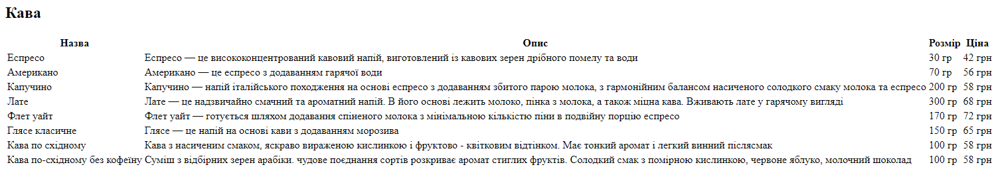
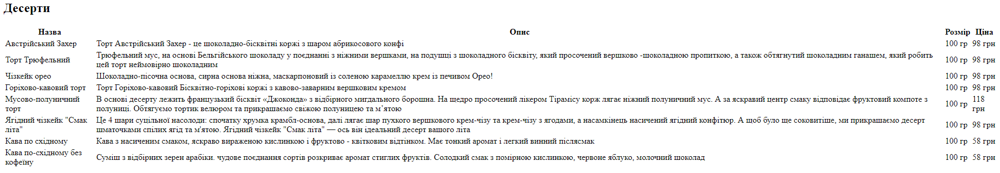

На сторінці "Меню" я використала дві таблиці для представлення інформації про доступні продукти. Перша таблиця містить інформацію про різноманітні види кави, а друга - про асортимент десертів. Кожна таблиця відображає назву продукту, опис, розмір та ціни.
1. HTML-код таблиці "Кава":
<h2 class="menu__table-title">Кава</h2>
<table class="menu-coffee__table menu__table">
<tr>
<th>Назва</th>
<th>Опис</th>
<th>Розмір</th>
<th>Ціна</th>
</tr>
<tr>
<td class="menu__table-name">Еспресо</td>
<td class="menu__table-info">Еспресо — це висококонцентрований кавовий напій, виготовлений із кавових зерен дрібного помелу
та води</td>
<td class="menu__table-size">30 гр</td>
<td class="menu__table-price">42 грн</td>
</tr>
<tr>
<td class="menu__table-name">Американо</td>
<td class="menu__table-info">Американо — це еспресо з додаванням гарячої води</td>
<td class="menu__table-size">70 гр </td>
<td class="menu__table-price">56 грн</td>
</tr>
<tr>
<td class="menu__table-name">Капучино</td>
<td class="menu__table-info">Капучино — напій італійського походження на основі еспресо з додаванням збитого парою молока,
з гармонійним балансом насиченого солодкого смаку молока та еспресо</td>
<td class="menu__table-size">200 гр</td>
<td class="menu__table-price">58 грн</td>
</tr>
<tr>
<td class="menu__table-name">Лате</td>
<td class="menu__table-info">Лате — це надзвичайно смачний та ароматний напій. В його основі лежить молоко, пінка з молока,
а також міцна кава. Вживають лате у гарячому вигляді</td>
<td class="menu__table-size">300 гр</td>
<td class="menu__table-price">68 грн</td>
</tr>
<tr>
<td class="menu__table-name">Флет уайт</td>
<td class="menu__table-info">Флет уайт — готується шляхом додавання спіненого молока з мінімальною кількістю піни в подвійну
порцію еспресо</td>
<td class="menu__table-size">170 гр</td>
<td class="menu__table-price">72 грн</td>
</tr>
<tr>
<td class="menu__table-name">Глясе класичне</td>
<td class="menu__table-info">Глясе — це напій на основі кави з додаванням морозива</td>
<td class="menu__table-size">150 гр</td>
<td class="menu__table-price">65 грн</td>
</tr>
<tr>
<td class="menu__table-name">Кава по східному</td>
<td class="menu__table-info">Кава з насиченим смаком, яскраво вираженою кислинкою і фруктово - квітковим відтінком. Має
тонкий аромат і легкий винний післясмак</td>
<td class="menu__table-size">100 гр</td>
<td class="menu__table-price">58 грн</td>
</tr>
<tr>
<td class="menu__table-name">Кава по-східному без кофеїну</td>
<td class="menu__table-info">Суміш з відбірних зерен арабіки. чудове поєднання сортів розкриває аромат стиглих фруктів. Солодкий
смак з помірною кислинкою, червоне яблуко, молочний шоколад</td>
<td class="menu__table-size">100 гр</td>
<td class="menu__table-price">58 грн</td>
</tr>
</table>
2. Вигляд таблиці "Кава" у браузері:
3. HTML-код таблиці "Десерти":
<h2 class="menu__table-title">Десерти</h2>
<table class="menu-desserts__table menu__table">
<tr>
<th>Назва</th>
<th>Опис</th>
<th>Розмір</th>
<th>Ціна</th>
</tr>
<tr>
<td class="menu__table-name">Австрійський Захер</td>
<td class="menu__table-info">Торт Австрійський Захер - це шоколадно-бісквітні коржі з шаром абрикосового конфі</td>
<td class="menu__table-size">100 гр</td>
<td class="menu__table-price">98 грн</td>
</tr>
<tr>
<td class="menu__table-name">Торт Трюфельний</td>
<td class="menu__table-info">Трюфельний мус, на основі Бельгійського шоколаду у поєднанні з ніжними вершками, на подушці з
шоколадного бісквіту, який просочений вершково-шоколадною пропиткою, а також обтягнутий шоколадним ганашем, який робить цей торт
неймовірно шоколадним</td>
<td class="menu__table-size">100 гр</td>
<td class="menu__table-price">98 грн</td>
</tr>
<tr>
<td class="menu__table-name">Чізкейк орео</td>
<td class="menu__table-info">Шоколадно-пісочна основа, сирна основа ніжна, маскарпоновий із соленою карамеллю крем із
печивом Орео!</td>
<td class="menu__table-size">100 гр</td>
<td class="menu__table-price">98 грн</td>
</tr>
<tr>
<td class="menu__table-name">Горіхово-кавовий торт</td>
<td class="menu__table-info">Торт Горіхово-кавовий Бісквітно-горіхові коржі з кавово-заварним вершковим кремом</td>
<td class="menu__table-size">100 гр</td>
<td class="menu__table-price">98 грн</td>
</tr>
<tr>
<td class="menu__table-name">Мусово-полуничний торт</td>
<td class="menu__table-info">В
основі десерту лежить французький бісквіт «Джоконда» з відбірного мигдального
борошна. На щедро просочений лікером Тірамісу корж лягає ніжний полуничний мус. А за яскравий центр смаку відповідає
фруктовий компоте з полуниці. Обтягуємо тортик велюром та прикрашаємо свіжою полуницею та мʼятою</td>
<td class="menu__table-size">100 гр</td>
<td class="menu__table-price">118 грн</td>
</tr>
<tr>
<td class="menu__table-name">Ягідний чізкейк "Смак літа"</td>
<td class="menu__table-info">Це 4 шари суцільної насолоди: спочатку хрумка крамбл-основа, далі лягає шар пухкого вершкового
крем-чізу та крем-чізу з ягодами, а насамкінець насичений ягідний конфітюр. А щоб було ще соковитіше, ми прикрашаємо десерт
шматочками спілих ягід та м'ятою. Ягідний чізкейк "Смак літа" — ось він ідеальний десерт вашого літа</td>
<td class="menu__table-size">100 гр</td>
<td class="menu__table-price">98 грн</td>
</tr>
<tr>
<td class="menu__table-name">Кава по східному</td>
<td class="menu__table-info">Кава з насиченим смаком, яскраво вираженою кислинкою і фруктово - квітковим відтінком. Має тонкий
аромат і легкий винний післясмак</td>
<td class="menu__table-size">100 гр</td>
<td class="menu__table-price">58 грн</td>
</tr>
<tr>
<td class="menu__table-name">Кава по-східному без кофеїну</td>
<td class="menu__table-info">Суміш з відбірних зерен арабіки. чудове поєднання сортів розкриває аромат стиглих фруктів. Солодкий
смак з помірною кислинкою, червоне яблуко, молочний шоколад</td>
<td class="menu__table-size">100 гр</td>
<td class="menu__table-price">58 грн</td>
</tr>
</table>
4. Вигляд таблиці "Десерти" у браузері:
